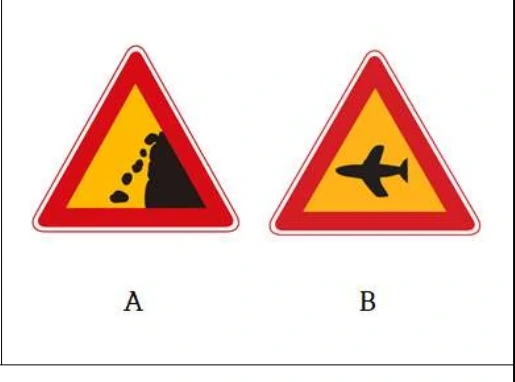

883. Which explanation for the signs is correct?

- ①Sign A indicates a rockfall hazard, and is installed where there is a risk of rockfall.
- ②Sign A is installed at locations where one side of the road is a fall hazard, such as a riverbank, coastline, or valley.
- ③Sign B is installed at locations where crosswinds are strong enough to shake an aircraft, requiring caution.
- ④Sign B is installed at locations near military airports where vehicle and pedestrian traffic is strictly prohibited. A B
Show answer
Answer
① Sign A indicates a rockfall hazard, and is installed where there is a risk of rockfall.
Reference
A is Road Traffic Act Enforcement Rules [Appendix 6], falling rock road sign (caution sign No. 130). Install at a location where there is a risk of falling rocks. It is installed on the right side of the road 30 to 200 meters before the point of risk of falling rocks. B is the Road Traffic Act enforcement rules [Appendix 6], airplane signs (caution sign No. 136). It is installed on the road close to the direction of takeoff and landing of the airplane at the airfield. It is installed on the right side of the road 50 to 200 meters before the airplane takeoff and landing point.
Reference text is a machine translation for study.